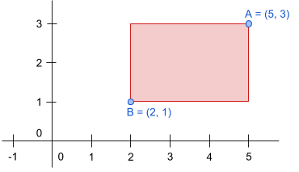

Explanation 5
Tenen la mateixa proporció, però el marc és més petit que la foto:

En Joan té un munt de fotos per a emmarcar, i vol comprar els marcs.
Els marcs han de ser suficientment grans com per a que hi càpiga la foto i a més a més ha de tenir la mateixa proporció per a que quedi bé.
La definició del rectangle d'una foto i d'un marc es pot fer amb les coordenades dels seus punts superior-dreta i inferior-esquerra:

Input Format
La entrada consta de la definició del rectangle de la foto i del rectangle del marc.
Per a cada rectangle s'indiquen les coordenades (x, y) dels seus cantons superior-dreta i inferior-esquerra.
Constraints
-
Output Format
S'imprimirà "true" si el marc és adequat per a la foto, i "false" si no ho és.
Sample Input 0
1 1 0 0
1 1 0 0
Sample Output 0
true
Explanation 0
La foto i el marc són iguals, per tant si que hi cap i sí que té la mateixa proporció.
Sample Input 1
1 1 0 0
2 2 0 0
Sample Output 1
true
Explanation 1
El marc és més gran que la foto i la proporció és la mateixa
Sample Input 2
1 1 0 0
3 2 0 0
Sample Output 2
false
Explanation 2
El marc és més gran que la foto, però la proporció no és la mateixa
Sample Input 3
1 2 0 0
4 2 2 1
Sample Output 3
true
Explanation 3
La foto i el marc tenen el mateix tamany i la proporció és la mateixa
Sample Input 4
1 1 -1 0
4 3 3 1
Sample Output 4
true
Explanation 4
El marc i la foto tenen el mateix tamany i la proporció és la mateixa
Sample Input 5
1 2 -1 0
4 2 3 1
Sample Output 5
false
Explanation 5
Tenen la mateixa proporció, però el marc és més petit que la foto:
Sample Input 6
4 -2 -1 1
3 2 1 1
Sample Output 6
false
Sample Input 7
4 3 0 1
8 6 0 1
Sample Output 7
false